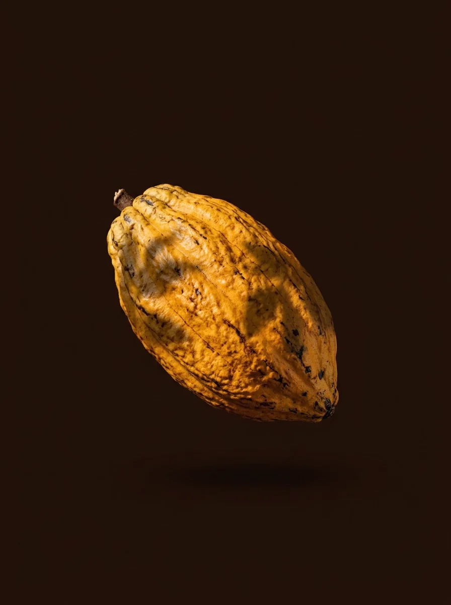

Colheita
Amadurece à sombra.
O cacau cresce sob árvores nativas da Mata Atlântica, no sistema que o sul da Bahia chama de cabruca.

Da mata de Ilhéus até a sua mão, cada etapa da barra passa por esta tela.
O cacau cresce sob árvores nativas da Mata Atlântica, no sistema que o sul da Bahia chama de cabruca.
A polpa branca que envolve as sementes é o que alimenta a fermentação nos dias seguintes.
O teto corre sobre trilhos e cobre as sementes quando chove. Foi dele que tiramos o nome.
O calor solta a casca e quebra a semente em nibs, com cheiro de frutas secas.
70% cacau, 80 g, de uma única fazenda de Ilhéus.
Encomendas pelo WhatsApp, com entrega em Salvador e Lauro de Freitas.